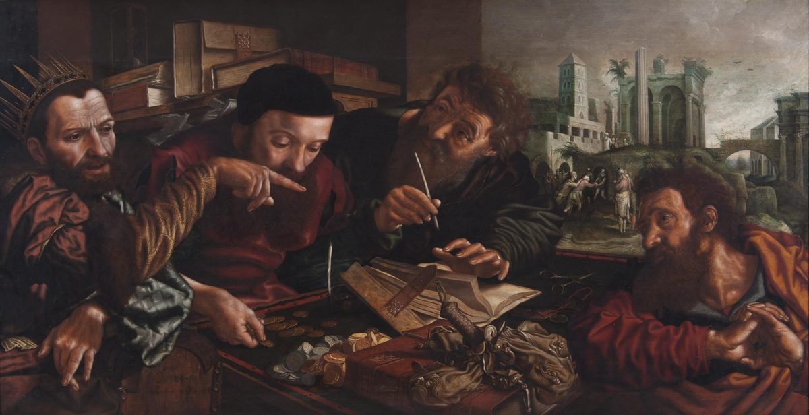

Matthew 18 — The Mister Translation

Hemessen paints the parable as an audit — the crowned king, the steward, the clerk with his pen, and the table of coins and ledgers that verses 23-24 actually describe. ⚠ Look through the opening at the back, though: the small sunlit scene in the distance is the second half of the story, the forgiven man seizing his fellow slave by the throat over a hundred denarii. Both halves are on one canvas, the way Raphael put both halves of chapter 17 on one — but here the arrangement carries an argument of its own: the cruelty is painted small, far away, and easy to miss, which is roughly how the man himself seems to have regarded it. Painted in Antwerp, then the centre of European banking: the setting is a tax collector's office, a stock subject in sixteenth-century Flemish painting, and Hemessen is credited with originating this kind of moralizing genre picture — a parable staged as an everyday commercial scene. The panel is unusually wide for its height (about 82 × 155 cm), which is what lets the distant courtyard sit so far from the table.
{kind=link}
Translator’s Notes — verse by verse
Each note explains this translation's choice and compares the seven versions on the shelf. Quotations from copyrighted versions (NIV, TLB, NWT) are kept to short phrases for comparison; KJV, Geneva, Douay-Rheims and ASV are public domain.
The fourth discourse opens on the wrong question. This is Matthew's fourth of five great blocks of teaching, and it is the one about life inside the community. It begins with the disciples asking who is greatest — a question with a comparative in it (meizōn), asked within hours of the transfiguration and the second passion prediction (17:22-23). Jesus does not refuse the comparative; he answers with it, which is sharper. Whoever lowers himself, "this one is the greater."
A child, and a verb of reversal. The word is paidion — a young child, and grammatically neuter, which is why the Greek and this translation both say the child was stood "in the middle of them" and refer to it. ⚠ The demand is not to be childlike in temperament — nothing here praises innocence, wonder or simplicity, all of which later readers have supplied. The point is status: in that world a child had none, and the disciples had just been arguing about rank. And the verb is straphēte, "unless you turn" — the plain word for turning around, which is Greek's way of carrying the prophets' Hebrew shuv. KJV reads "except ye be converted," which is not wrong but has since acquired a whole religious apparatus the Greek does not carry; ASV "except ye turn" and NWT "unless you turn around" are tighter, and are followed here.
Remember where the child is standing. Verse 2 puts the child en mesō autōn, "in the middle of them." Hold that phrase: it is the last thing this discourse says before it stops, in verse 20, and the same three Greek words come back with a different occupant.
The word this passage is built on. Skandalon is the trigger of a trap — the baited stick that springs it — and so anything that brings another person down; the verb skandalizō is to spring it on someone. English has no noun for it, which is why every version reaches for a phrase: KJV "offend" and "offences" (which in 1611 meant causing a stumble, not hurting feelings — a genuine archaism that misleads modern readers badly), ASV "cause to stumble" / "occasions of stumbling," NWT "stumble," NIV "cause to sin" / "things that cause people to stumble." This translation uses cause to stumble and stumbling-block, keeping one root visible across all four verses, because the passage's whole force is that the same word runs from what you do to a child (v6) to what your own hand does to you (v8).
The millstone is specified, and the specification is the threat. Mylos onikos — literally a donkey-millstone: not the small hand-quern a woman turned at home, but the great upper stone of a commercial mill, turned by a draught animal. KJV flattens it to "a millstone," which loses the scale; ASV reads "a great millstone" with "a millstone turned by an ass" in the margin, and NWT spells it out. The sea is pelagos, the open water, not the shallows. Note the grammar of the threat: it does not say this will be done to him. It says it would be better for him if it were.
Said before, to different people. The hand, the foot and the eye were already in the Sermon on the Mount (5:29-30), where the context was lust. Here the context is the community, and the members are named in a different order with a foot added. Same hyperbole, same refusal to soften: ekkopson, "cut it off," exele, "tear it out." Gehenna (v9) is the Valley of Hinnom outside Jerusalem — a real place with a horrible history (children burned to Molech; see Jeremiah 19) — which this translation transliterates rather than rendering "hell," as ASV and NWT also do, because the English word carries fifteen centuries of freight the Greek noun does not.
"Their angels." Two words, and one of the slenderest foundations in Scripture for a very large idea. The claim is precise and limited: the little ones have angels, in the heavens, who continually behold the face of the Father. To "behold the face" of a monarch is court language for having standing to approach — these are not distant attendants but courtiers with permanent access. That is all the verse says. It does not say each person has one, it does not say what they do, and the later doctrine of guardian angels is built on this verse plus Acts 12:15, where the believers assume Peter's "angel" is at the door. The library reports the verse and the size of the structure resting on it.
⚠ And the verse that is not printed above. Between verses 10 and 12 the KJV, GNV and DRB carry a verse 11: "For the Son of man is come to save that which was lost." It is absent from the earliest and best manuscripts, and the standard explanation is that a copyist imported it from Luke 19:10, where the sentence is original and famous. This is the second such gap in two chapters — 17:21 was the first — and the same decision is made for the same reason: the numbering keeps its gap so a reader looking for 18:11 finds an explanation rather than a hole. ⚠ Worth noticing what its absence changes here, because it is not nothing. With verse 11 in place, the lost sheep that follows reads as a statement about the Son of Man's mission. Without it, verses 10 and 12 run straight together and the parable is about what you must not do — despise one of these little ones — which is what the discourse is about throughout. NWT prints the verse number with a dash and a footnote; the Spanish shelf's older witness prints the sentence in full.
The same parable, aimed somewhere else. Luke tells the lost sheep to grumbling Pharisees, and there it is about God's welcome of sinners. Matthew tells it to the disciples, and here it is about their responsibility for each other: the ninety-nine are left on the mountains — not safely penned, which is the detail sermons usually smooth over — and the point lands in verse 14 as a statement about the Father's will. ⚠ The straying sheep is planaō, to wander, be led astray; it is not the aggressive word for rebellion. Note also that Matthew's shepherd only "happens to find it" (ean genētai heurein) — the finding is not guaranteed in the grammar, which is a small honesty the parable keeps.
A procedure, in three steps, and every step is designed to fail quietly. Go alone; take one or two; tell it to the assembly. The escalation is built to stop at the earliest possible stage, and the stated goal is not a verdict but a person — "you have gained your brother" (ekerdēsas, the merchant's word for turning a profit). Verse 16 quotes the Law's evidence rule verbatim — "on the mouth of two or three witnesses every matter may stand" (Deuteronomy 19:15, not yet on these pages) — and applies it to a domestic quarrel. ⚠ There is a real textual question at v15: the words "against you" (eis se) are missing from some of the best manuscripts, including Vaticanus. With them, this is about a personal wrong; without them, it is about sin as such and the passage becomes considerably more invasive. The critical text prints them, this translation prints them, and the alternative is stated rather than hidden.
⚠ Ekklēsia — and this library's fixed rendering. "Tell it to the congregation." The Greek word is ekklēsia, an assembly of people summoned together — Acts 19 uses it of a rioting mob in Ephesus — and it appears in the Gospels exactly twice, both in Matthew: at 16:18 and here. This translation renders it "congregation" everywhere, as Tyndale did; King James's third rule for his translators expressly forbade it ("the word Church not to be translated Congregation"), and English "church" descends from a different word altogether (kyriakon, "belonging to the Lord"). KJV GNV DRB NIV all print "church" here, which quietly imports an institution into a verse about a quarrel between two people; NWT reads "congregation." ⚠ Note how much rides on it: whatever ekklēsia means at 18:17, it has to be something small enough that a man can stand up in it and describe a private grievance.
The keys, handed to everybody. Verse 18 is word for word the second half of what was said to Peter at 16:19 — bind and loose, the standing rabbinic pair for forbidding and permitting — except that there the verbs were singular, addressed to one man, and here they are plural, addressed to the assembled disciples. The library does not adjudicate what the Petrine promise means; it does note, factually, that the identical authority is repeated two chapters later to the whole group, in the context of a discipline procedure rather than a personal commission.
And the phrase that closes the circle. "For where two or three are gathered together in my name, there I am en mesō autōn — in the middle of them." Those are the same three Greek words as verse 2, where the child was stood in the middle of them. The discourse opens by putting the lowest-status person in the world at the centre of the disciples' circle and ends by putting Christ there. That is not a coincidence of translation; it is the same phrase, and it is the argument of the whole passage in three words.
Peter's seven was already generous. The rabbinic discussion of repeated forgiveness tended to settle at three; Peter more than doubles it and is still counting, which is the thing the answer breaks.
Seventy-seven, or seventy times seven? The Greek hebdomēkontakis hepta is genuinely ambiguous and the shelf splits: KJV GNV DRB read "seventy times seven" (490), ASV NIV NWT read "seventy-seven." ⚠ But the decisive evidence is not arithmetic, it is a quotation. The Septuagint of Genesis 4:24 renders Lamech's boast — "if Cain is avenged sevenfold, then Lamech seventy-sevenfold" — with exactly these two Greek words. Jesus is not choosing a big number. He is quoting the Bible's first song, the one where a man brags about escalating revenge, and running it backwards. Cain's seven becomes Peter's seven; Lamech's seventy-seven becomes the measure of forgiveness. This translation reads seventy-seven because that is what makes the quotation audible, and says so rather than leaving the choice looking arbitrary.
The arithmetic is the parable. Myriōn talantōn — "ten thousand talents" — is the largest number in Greek (myrias, a myriad, also just meaning "countless") attached to the largest unit of currency. One talent was roughly six thousand denarii; a denarius was a day's wage for a labourer. So the debt is about sixty million days' wages — on the order of two hundred thousand years of work. For scale, Josephus reports the combined annual tribute of Judea, Idumea and Samaria at six hundred talents. The man owes his king more than sixteen times the tax revenue of the province, and then says "be patient with me and I will repay you everything," which is the funniest and saddest line in the story. The second debt is a hundred denarii — a hundred days' wages, a real sum, the kind of money a person could actually be ruined by, and roughly one six-hundred-thousandth of the first.
The two petitions are the same petition. Verse 26 and verse 29 are near-identical in Greek — makrothymēson ep' emoi kai apodōsō soi, "be patient with me and I will repay you" — the second missing only the word "everything." The man who was forgiven has the exact sentence he used said back to him and does not recognize it. This translation keeps both renderings word-identical so the repetition survives; a version that varies the wording for style destroys the point.
What the master felt, and what he forgave. Splanchnistheis — from splanchna, the inward organs; Greek locates compassion in the viscera the way Hebrew does in the womb and the bowels. It is a physical word, and the shelf tends to abstract it (KJV "moved with compassion," NIV "took pity"); this translation reads "moved in his inward parts" so the body stays in the sentence. And what he cancels is the daneion, the loan — not a fine, not a tax: a thing lent and expected back.
The ending nobody quotes. The master hands the man over to the basanistai — the torturers (KJV "tormentors"; NWT and NIV soften to "jailers," which is what the role practically was in a debtors' prison, though the noun is built on basanos, torture) — "until he should repay everything," which after verse 24 means never. ⚠ And the verb for what the master does is paredōken, "handed over" — the same verb planted one chapter ago at 17:22, where the Son of Man is the one handed over. Then verse 35 turns the whole thing on the reader without softening: "so also my heavenly Father will do to you." The discourse that began with a child in the middle ends with a threat, and the library does not file the edges off it. Note the last three words — apo tōn kardiōn, "from your hearts": the servant's failure was not that he refused a procedure, but that the forgiveness never reached the place where it would have cost him something.
Patterns worth carrying forward
Where this translation keeps the words exact / distinct: "turn" for straphēte (with ASV/NWT, against KJV's "be converted," which has collected machinery the Greek does not carry); "cause to stumble" / "stumbling-block" for the skandal- family, one root kept visible across four verses, against KJV's "offend/offences," now a false friend; "donkey-millstone" for mylos onikos, because the size is the threat; "Gehenna" transliterated rather than "hell" (with ASV/NWT); "congregation" for ekklēsia, the library's fixed rendering, against the whole KJV tradition's "church"; "seventy-seven" over "seventy times seven," because it is a quotation and not a quantity; "moved in his inward parts" for splanchnistheis; and "torturers" for basanistai, where NWT/NIV read "jailers."
Echoes paid. En mesō autōn, "in the middle of them" — the child at v2 and Christ at v20, the same three words bracketing the discourse; bind and loose (v18) — 16:19 repeated in the plural to the whole group, exactly as chapter 16's own closing note said it would be; ekklēsia (v17) — the second and last time the word appears in any Gospel, after 16:18; the hand, foot and eye (vv8-9) — the Sermon's hyperbole from 5:29-30, re-aimed from lust at community; receiving a child in my name (v5) — the receiving-chain of 10:40; seventy-seven (v22) — Lamech's revenge-boast at Genesis 4:24, run backwards; handed over (v34) — the verb planted last chapter at 17:22; and deeply grieved (v31) — elypēthēsan sphodra, the disciples' own reaction to the passion prediction at 17:23, now the fellow slaves' reaction to cruelty.
Echoes planted. The debt language, which the Lord's Prayer already made the model of sin (6:12, "forgive us our debts as we also have forgiven our debtors") and which this parable now argues at length; the little ones, a category the Gospel keeps returning to; and the discipline procedure of vv15-17, waiting for the letters to try to apply it.
⚠ And two places the library reports rather than decides. Verse 11, printed by the KJV tradition and absent from the earliest manuscripts, left out here with its gap visible and its effect on the surrounding parable stated. And verse 15's "against you," present in the critical text and printed here, but missing from Vaticanus among others — a variant that decides whether this procedure is for personal wrongs or for sin in general.
Next in this book: chapter 19 — out of Galilee into Judea beyond the Jordan; the question about divorce and the answer that goes back past Moses to Genesis ("from the beginning it was not so"); the disciples' startled "then it is better not to marry"; children brought to be blessed and the disciples turning them away again, one chapter after this one; and the rich young man, the camel, the needle, and "who then can be saved?"